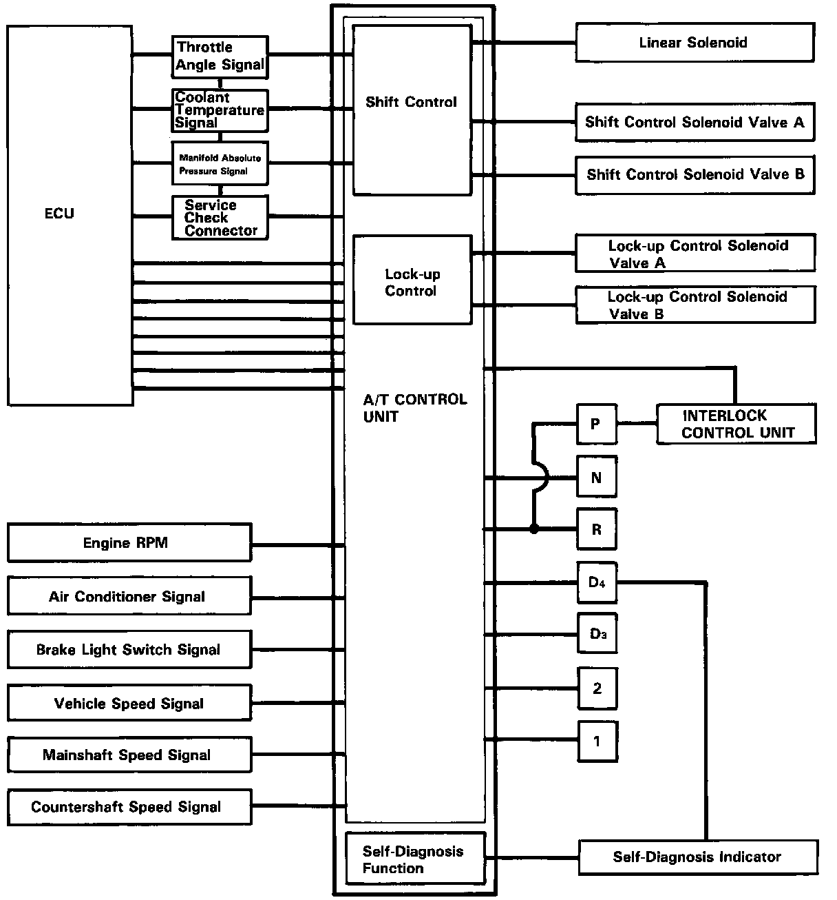
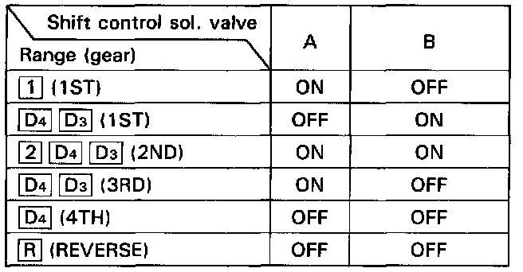
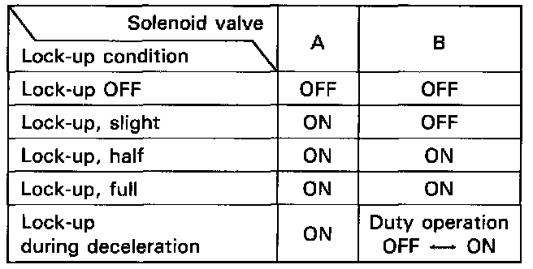

Transmission Control Systems: Description and Operation

Electronic Control System
The electronic control system consists of an automatic transmission (A/T) control unit, sensors, a linear solenoid and four solenoid valves. Shifting and lock-up are electronically controlled for comfortable driving under all conditions. The A/T control unit is located behind the glove box on the passenger's side.

Shift control
Shifting is related to engine torque through the linear solenoid used to operate throttle valve which is controlled by the A/T control unit. Getting a signal from each sensor, the A/T control unit determines the appropriate shift point and activates shift control solenoid valves A and/or B.
The combination of driving signals to shift control solenoid valves A and B is shown in the table.

Lock-up control
From sensor input signals, the A/T control unit determines whether to turn the lock-up ON or OFF and activates lock-up control solenoid valve A and/or B accordingly.
The combination of driving signals to lock-up control solenoid valves A and B is shown in the table.